Discours sur l’imagination, pp. xiii–xiv: Ancient Laws Against Sorcerers
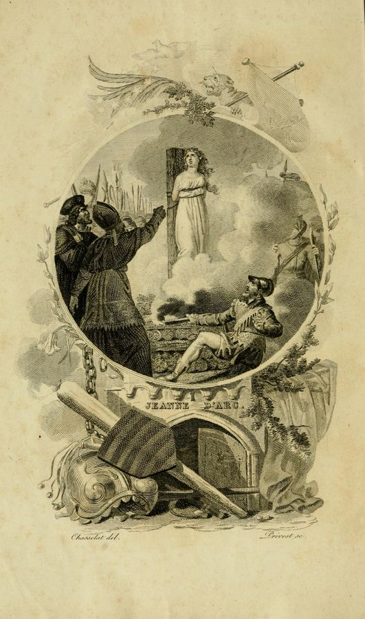
French: Paris, 1818, pp. xiii–xiv (scan), spelling as printed. Garinet’s footnotes follow the text. Highlighted: the statements Lecky reproduces.
All lawgivers have laid down penalties against the madmen who believe themselves sorcerers; and Saint Augustine and Plutarch have observed that the different sects of philosophers condemned them, with the sole exception of the Epicureans, who denied the existence of spirits.
In the laws that Moses gave the Jewish people there are provisions not only against sorcerers but also against those who consult them (1).
The Greeks had a very explicit law, which provides that every sorcerer or magician who, by charms, spoken words, ligatures, wax images, or any other evil spell, enchants or bewitches anyone, or uses them to bring about the death of men or cattle, shall be punished with death. Plato advises those who marry to beware of these charms or ligatures, which trouble the peace of households (2).
Under this law Lemia, a sorceress of Athens, suffered the extreme penalty, as Demosthenes reports. Pausanias adds that this republic set up a court of justice for the punishment of sorcerers (1).
We see this legislation adopted in the laws of the Twelve Tables. The sorcerer’s head is forfeit to Ceres (2).
(1) Exodus 22:18; Leviticus 19:31, 20:6.
(2) Plato, Laws, book xi.
[p. xiv] (1) Pausanias, “Mœlia” [sic], book v.
(2) “Whoever has charmed away crops … let them put him to death for Ceres”, book vii, third table.
Original French
Tous les législateurs ont porté des peines contre les insensés qui se croient sorciers; et saint Augustin et Plutarque ont observé que les différentes sectes de philosophes les ont condamnés, à l’exception des seuls épicuriens, qui niaient l’existence des esprits.
Dans les lois que Moïse donna au peuple juif, on trouve des dispositions, non-seulement contre les sorciers, mais encore contre ceux qui les consultent (1).
Les Grecs avaient une loi très-expresse, qui porte que tout sorcier ou magicien qui, par charmes, paroles, ligatures, images de cire ou autre maléfice, enchantent ou charment quelqu’un, ou qui s’en servent pour faire périr les hommes ou le bétail, soient punis de mort. Platon conseille à ceux qui se marient, de prendre garde à ces charmes ou ligatures, qui troublent la paix des ménages (2).
En vertu de cette loi, Lemia, sorcière d’Athènes, fut punie du dernier supplice, au rapport de Démosthène. Pausanias ajoute que cette république établit une chambre de justice, destinée à punir les sorciers (1).
Nous voyons cette législation adoptée, dans les lois des douze tables. La tête du sorcier est dévouée à Cérès (2).
(1) Exode, ch. xxii, v. 18. — Lévitique, ch. xix, v. 31; ch. xx, v. 6.
(2) Platon, des Lois, liv. xi.
[p. xiv] (1) Pausanias. Mœlia, lib. v.
(2) Qui fruges excantasset cereri necanto, liv. vii, table 3e.
Who was “Lemia”?
No ancient source names an Athenian sorceress Lemia. The passage Garinet means is in the speech Against Aristogeiton (I), §79, which has come down under Demosthenes’ name (its authenticity has long been doubted). There the speaker mentions “Theoris of Lemnos, the filthy sorceress whom you put to death on that account with all her family” (A. T. Murray’s translation, Loeb, 1939). In the Greek she is “the Lemnian” (Λημνία), so “Lemia” looks like a garbled “Lemnia”, an adjective of origin mistaken for a personal name. Whether the slip is Garinet’s own or comes from an earlier French writer he copied has not been checked.
Garinet’s note on the Twelve Tables also looks garbled. The clause qui fruges excantassit (“whoever has charmed away crops”) is the Twelve Tables’ law against crop-charming as quoted by Pliny the Elder; “Cereri necanto” (“let them kill for Ceres”) resembles the Tables’ separate penalty for grazing or cutting another’s crops by night. Garinet’s note runs the two together. This is this edition’s reading of the note, not checked against Pliny’s text.
Lecky’s Summary Compared
Lecky does not quote Garinet; he condenses him, on p. 19 of Chapter I (note 14). Point by point:
| Lecky, 1865 | Garinet, 1818 | |
|---|---|---|
| Authorities | “St. Augustine assures us” | “saint Augustin et Plutarque ont observé” |
| The philosophers | all the sects “admitted it” (the belief that evil can be inflicted by supernatural agency) | the sects of philosophers “les ont condamnés” (condemned sorcerers) |
| The Epicureans | excepted, as they “denied the existence of evil spirits” | excepted, as they “niaient l’existence des esprits” (denied the existence of spirits) |
| Order | Decemvirs first, then Greece | Greece first, then the Twelve Tables |
| The sorceress | “Lemia”, in the days of Demosthenes | “Lemia, sorcière d’Athènes”, on Demosthenes’ report |
| Page reference | “pp. 13, 14” | pp. xiii–xiv (scan); arabic pp. 13–14 are about Clovis |
What the differences mean:
- The page numbers are a simple slip: the roman numerals of the preface became arabic in Lecky’s note. Anyone following his reference to pp. 13–14 lands in the reign of Clovis.
- Garinet’s sentence is muddled: it says the Epicureans did not condemn sorcerers because they denied spirits, which only makes sense if “condemned” means “took seriously”. Lecky’s “admitted it” is the reading that makes the sentence coherent, and it is also the one his argument needs. Whether Augustine actually says this has not been checked here.
- “Lemia” passes unchanged from Garinet to Lecky, so Lecky evidently took the case from Garinet without going back to the Greek.
The Salic law: two hundred sous for a witch who has eaten a man (pp. 6–7)
French: Paris 1818, pp. 6–7, scans n63–n64.
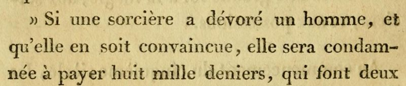
“… If anyone calls a free woman a witch or a prostitute and cannot prove it, let him be fined seven thousand five hundred deniers, which make one hundred and eighty-seven and a half sous.” “If a witch has devoured a man and is convicted of it, she shall be condemned to pay eight thousand deniers, which make two hundred sous.” The Salic laws do not impose the death penalty here, because in those days the greatest crime could be bought off with a fine.
Original French
« … Si quelqu’un appelle une femme libre sorcière ou prostituée, sans pouvoir le prouver, qu’il soit condamné à une amende de sept mille cinq cents deniers, qui font cent quatre-vingt-sept sous et demi. » « Si une sorcière a dévoré un homme, et qu’elle en soit convaincue, elle sera condamnée à payer huit mille deniers, qui font deux [p. 7] cents sous. » Les lois saliques ne prononcent pas ici la peine de mort, parce qu’alors le plus grand crime se rachetait par une amende.
Lecky’s ch. I note 76 (“a curious enactment ‘that any sorceress who has devoured a man should on conviction be fined 200 sous’ (Garinet, p. 6)”) matches; the sum is completed at the top of p. 7 (OCR only). Garinet’s explanation, that the Franks bought off even murder with a fine, is the point Lecky leaves out.
Fredegund’s son and the women of Paris, 578 (pp. 14–15)
French: Paris 1818, pp. 14–15, scans n71–n72.
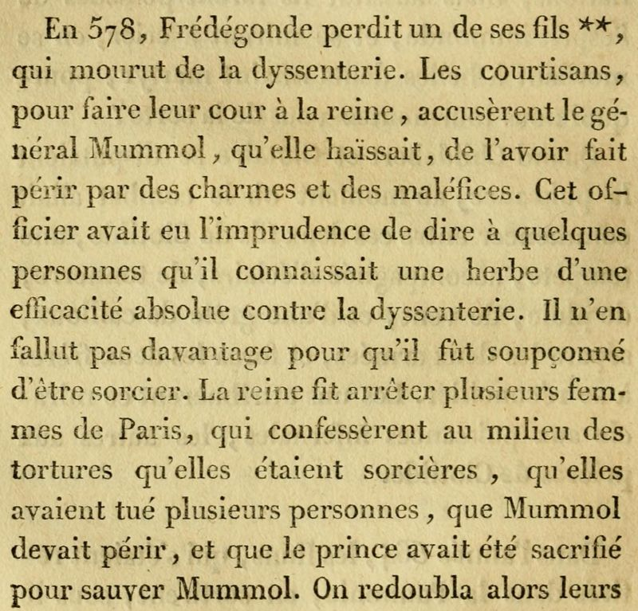
In 578 Fredegund lost one of her sons, who died of dysentery. The courtiers, to please the queen, accused the general Mummolus, whom she hated, of having killed him by charms and spells. This officer had been so imprudent as to tell some people that he knew of a herb of absolute efficacy against dysentery. Nothing more was needed for him to be suspected of sorcery. The queen had several women of Paris arrested, who confessed under torture that they were witches, that they had killed several people, that Mummolus was to die, and that the prince had been sacrificed to save Mummolus. Their torments were then redoubled; some were burnt, others drowned; some died on the wheel.
Original French
En 578, Frédégonde perdit un de ses fils, qui mourut de la dyssenterie. Les courtisans, pour faire leur cour à la reine, accusèrent le général Mummol, qu’elle haïssait, de l’avoir fait périr par des charmes et des maléfices. Cet officier avait eu l’imprudence de dire à quelques personnes qu’il connaissait une herbe d’une efficacité absolue contre la dyssenterie. Il n’en fallut pas davantage pour qu’il fût soupçonné d’être sorcier. La reine fit arrêter plusieurs femmes de Paris, qui confessèrent au milieu des tortures qu’elles étaient sorcières, qu’elles avaient tué plusieurs personnes, que Mummol devait périr, et que le prince avait été sacrifié pour sauver Mummol. On redoubla alors leurs [p. 15] tourmens; les unes furent brûlées, d’autres noyées; quelques-unes expirèrent sur la roue.
Lecky’s ch. I note 42 (pp. 14, 15): “towards the end of the sixth century, a son of Fredegonde died after a short illness; and numbers of women were put to the most prolonged and excruciating torments, and at last burnt or broken on the wheel.” The pages match; Lecky drops the drownings and the general Mummolus, whose remark about a herb for dysentery started the accusation. Garinet’s footnote cites “Debonnair, dans son Histoire de France, et la Chronique de Metz”.
Sylphs in the air, or an aurora? (p. 35, note)
French: Paris 1818, p. 35 and footnote, scan n92.
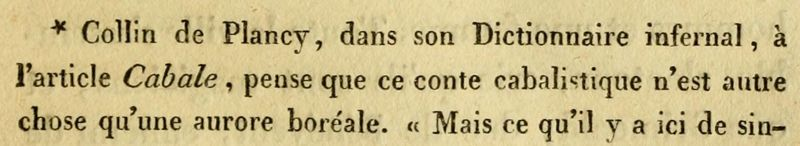
… In the air one saw these admirable creatures in human form, sometimes drawn up in battle order, marching in good array, or standing under arms, or encamped under splendid pavilions; sometimes on aerial ships of admirable build, whose flying fleet sailed wherever the breezes took it. The people at first believed that these were sorcerers who had taken over the air to raise storms there and to bring down hail on the harvests …
[note] Collin de Plancy, in his Dictionnaire infernal, under the article Cabale, thinks that this cabbalistic tale is nothing but an aurora borealis.
Original French
… On voyait dans les airs ces créatures admirables, en forme humaine, tantôt rangées en bataille, marchant en bon ordre, ou se tenant sous les armes, ou campées sous des pavillons superbes; tantôt sur des navires aériens d’une structure admirable, dont la flotte volante voguait au gré des zéphyrs. Le peuple crut d’abord que c’était des sorciers qui s’étaient emparés de l’air pour y exciter des orages, et pour faire grêler sur les moissons …
[note] Collin de Plancy, dans son Dictionnaire infernal, à l’article Cabale, pense que ce conte cabalistique n’est autre chose qu’une aurore boréale.
Lecky’s ch. I note 46 (“the corruscations of Aurora are said to have been attributed to the flashings of their wings … This, however, is doubtful”) rests on this footnote. The page has the sylphs’ aerial armies and fleets of the cabbalists’ tale, and a nineteenth-century writer’s guess that people were seeing an aurora; “the flashings of their wings” is not on it. Lecky himself calls the point doubtful.
Charlemagne’s capitularies against sorcerers (pp. 39–40)
French: Paris 1818, pp. 39–40, scans n96–n97.
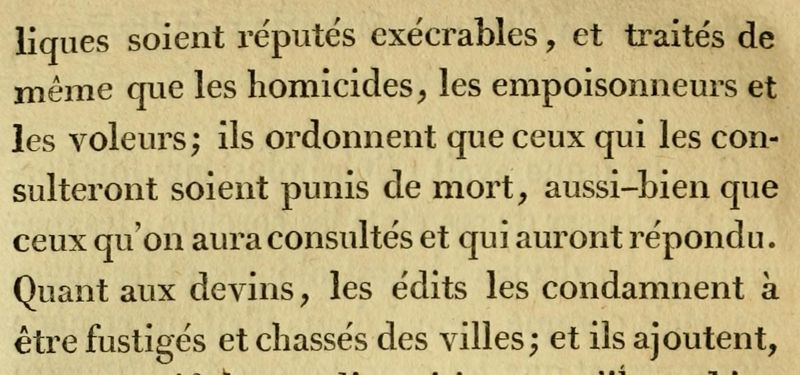
[p. 39] Charlemagne had several times repeated the order to drive sorcerers, magicians, diviners, astrologers and augurs out of his states. But since this evil needed a stronger remedy than exhortations, he at last had several edicts published, which can be read in his capitularies and which fix the penalties for them. … These regulations require that all who practise the diabolical arts be held execrable and treated like murderers, poisoners and thieves; they order that those who consult them be punished with death, as well as those consulted who have given answers. As for diviners, the edicts sentence them to be flogged and driven out of the towns …
Original French
[p. 39] Charlemagne avait réitéré plusieurs fois l’ordre de chasser de ses états les sorciers, les magiciens, les devins, les astrologues et les augures. Mais comme ce mal demandait un remède plus puissant que les exhortations, il fit enfin publier plusieurs édits, qu’on peut lire dans ses capitulaires, et qui établissent les peines dont ils devaient être punis. … Ces règlemens veulent que tous ceux qui exercent les arts diabo- [p. 40] liques soient réputés exécrables, et traités de même que les homicides, les empoisonneurs et les voleurs; ils ordonnent que ceux qui les consulteront soient punis de mort, aussi-bien que ceux qu’on aura consultés et qui auront répondu. Quant aux devins, les édits les condamnent à être fustigés et chassés des villes …
Lecky’s ch. I note 44 (p. 39): “Charlemagne enacted new and very stringent laws, condemning sorcerers to death, and great numbers seem to have perished in his reign.” The laws are here, with death for consulting and being consulted, though diviners were to be flogged and banished. That “great numbers seem to have perished” is not on pp. 39–41 (OCR searched for any count of victims).
Agobard against the weather-makers (p. 45)
French: Paris 1818, p. 45, scan n102.
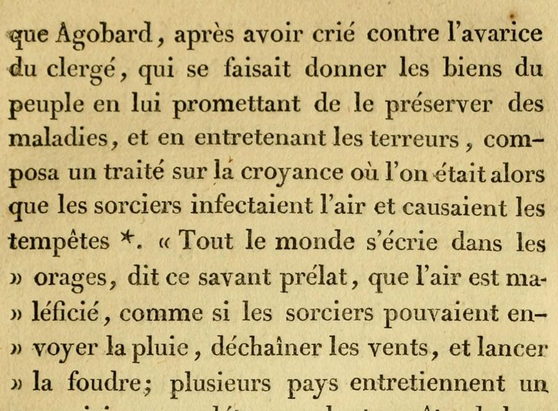
… Agobard, after crying out against the avarice of the clergy, who had the people’s goods given to them by promising to protect them from sickness and by keeping their terrors alive, wrote a treatise on the belief then held that sorcerers infected the air and caused storms. “Everyone cries out in a storm,” says this learned prelate, “that the air is bewitched, as if sorcerers could send rain, unleash the winds and hurl the thunderbolt; several districts keep a magician to turn storms away from their territory. Not long ago, when there was a murrain among the oxen, people imagined that the Duke of Benevento was sending men into the clouds to scatter enchanted powders over the fields …”
Original French
… Agobard, après avoir crié contre l’avarice du clergé, qui se faisait donner les biens du peuple en lui promettant de le préserver des maladies, et en entretenant les terreurs, composa un traité sur la croyance où l’on était alors que les sorciers infectaient l’air et causaient les tempêtes. « Tout le monde s’écrie dans les orages, dit ce savant prélat, que l’air est maléficié, comme si les sorciers pouvaient envoyer la pluie, déchaîner les vents, et lancer la foudre; plusieurs pays entretiennent un magicien pour détourner les tempêtes de leur territoire. Il y a peu de temps que la mortalité était sur les bœufs; on s’imagina que le duc de Bénévent envoyait des hommes dans les nuées pour répandre des poudres charmées sur les champs …
Lecky’s ch. I note 45 (p. 45) supports his sentence that “Agobard, Archbishop of Lyons — had the rare merit of opposing the popular belief” about hail and storms. The page fits. Agobard’s Latin treatise (De grandine et tonitruis) is not transcribed here; his other book, against images, has its own source page.
Pp. 38 and 42: The Famine of 795 and the Eclipse (Louis the Debonair)
French: Paris, 1818, p. 38 (scan) and p. 42 (scan), spelling as printed. Garinet’s footnotes follow each passage. “[…]” marks omitted text. Highlighted: the statements Lecky reproduces.
P. 38. It was read there that pagans, sorcerers, and in general all who would not pay the tithe exposed themselves to reaping nothing; and Jesus Christ, departing from his character of clemency, threatened to send into the houses of the impious winged serpents that would devour the breasts of their wives…. (1)
A great famine that followed, in 795, confirmed the first threat. All the ears of corn were found empty (2); people worthy of belief heard in the air several voices of demons, who declared that they had devoured the harvest because the tithes were not being paid to the clergy; whereupon it was ordered, under severe penalties, that they should be paid in future.
(1) Mably, obs. 5, Histoire de France, book II.
(2) Capitularies, year 794, art. 23.
P. 42. […] The Debonair, weary from the journey and disheartened at always having his children to fight, fell dangerously ill. A total eclipse of the sun, which occurred on the eve of the Ascension, frightened once more that mind, which misfortunes and superstition had weakened (1). Fear increasing his illness, the emperor had himself carried to an island near Mainz. […]
(1) President Hénault. — Louis the Debonair nevertheless passed for a great astronomer, and was frightened by an eclipse; but everything is combined in such weak minds.
Original French
P. 38. On y lisait que les païens, les sorciers, et généralement tous ceux qui ne voudraient pas payer la dîme s’exposaient à ne rien récolter; et Jésus-Christ, sortant de son caractère de clémence, menaçait d’envoyer dans les maisons des impies, des serpens ailés qui dévoreraient le sein de leurs femmes…. (1)
Une grande famine qui survint, en 795, confirma la première menace. On avait trouvé tous les épis de blé vides (2); des personnes dignes de foi entendirent en l’air plusieurs voix de démons, qui déclarèrent qu’ils avaient dévoré la moisson, parce qu’on ne payait pas les dîmes aux ecclésiastiques: c’est pourquoi il fut ordonné, sous des peines sévères, qu’on les paierait à l’avenir.
(1) Mably, obs. 5. Histoire de France, liv. II.
(2) Capitulaires, an 794, art. 23.
P. 42. […] Le Débonnaire, fatigué du voyage, et rebuté d’avoir toujours ses enfans à combattre, tomba dangereusement malade. Une éclipse totale de soleil, qui survint la veille de l’Ascension, effraya encore cet esprit, que les malheurs et la superstition avaient affaibli (1). La peur augmentant son mal, l’empereur se fit porter dans une île près de Mayence. […]
(1) Le président Hénault. — Louis-le-Débonnaire passait cependant pour un grand astronome, et s’effrayait d’une éclipse; mais tout s’allie dans des têtes aussi faibles.
Which year, and which king?
Garinet does not date the eclipse. The paragraph before the one quoted opens “En 839”, and the emperor is Louis the Pious (“le Débonnaire”), whom Garinet treats as a French king. The “Mably” and “Hénault” in the notes are the eighteenth-century historians Gabriel Bonnot de Mably and Charles-Jean-François Hénault; the notes name them but do not give pages for the eclipse. The reference “Capitulaires, an 794, art. 23” is Garinet’s own, and has not been traced to its text here.
Lecky’s Use of Pp. 38 and 42 Compared
Lecky’s sentences are in notes 39 and 40 of Chapter I (p. 44): “in the eighth century, a fearful famine afflicted France, and was generally represented as a consequence of the repugnance which the French people manifested to the payment of tithes” (Garinet, p. 38), and “in the ninth century, a total eclipse of the sun struck terror through Europe, and is said to have been one of the causes of the death of a French king” (Ibid., p. 42). Point by point:
| Lecky, 1865 | Garinet, 1818 | |
|---|---|---|
| The famine | “in the eighth century”; “generally represented as a consequence of the repugnance … to the payment of tithes” | “en 795”; the clergy’s account: demons declared they had eaten the harvest “parce qu’on ne payait pas les dîmes”; a decree followed. Garinet does not say “generally” or mention “repugnance”. |
| The eclipse | “struck terror through Europe” | “effraya encore cet esprit” — it frightened the emperor. “Through Europe” is Lecky’s addition. |
| The king’s death | “said to have been one of the causes of the death of a French king” | “La peur augmentant son mal” (fear increasing his illness). Garinet does not say here that Louis died of it, only that the illness grew worse. |
| Scan | vol. I, p. 44 | p. 38, p. 42 |
Lecky’s page references are right this time: unlike the “pp. 13, 14” of the preface, his “p. 38” and “p. 42” are the arabic pages of the history proper.
P. 176: De Lancre in the Labourd, 1609 (apples, and the flight to Spain)
French: Paris, 1818, pp. 175–176, scan p. 175, scan p. 176, spelling as printed. Garinet’s inner quotation marks (» at line starts) are omitted.
P. 175. In May 1609 Henri IV commissioned Pierre De Lancre, councillor in the parlement of Bordeaux, and the president d’Espaignet, to purge the Labourd of sorcerers.
The inhabitants of those parts give themselves to trade and undertake long voyages. Meanwhile, says De Lancre, their wives become witches. The priests were accused of saying Mass in honour of the Devil. These wretches, learning that the commissioners were coming, fled into Spain. The Inquisition asked for a list of these sorcerers and, while waiting for it, had all who arrived burned.
The investigation of the affair lasted a long time, and the great proofs of sorcery were that the women loved dancing, and that the tambourine that beat time was the same that served at the Sabbath; that their dress was too coquettish, and their petticoats pleated at the back. Finally, De Lancre observes, “it is a land of apples; they eat nothing but apples and drink nothing but apple juice, which is why they bite so willingly into that apple of transgression which made our first father overstep the commandment of God. They are Eves who seduce Adams; they listen to men and devils.” In the proceedings one sees children of the tenderest age admit to having been at the Sabbath.
Original French
P. 175. Au mois de mai 1609, Henri IV donna commission à Pierre De Lancre, conseiller au parlement de Bordeaux, et au président d’Espaignet, de purger de sorciers le pays de Labour.
Les habitans de ces contrées s’adonnent au commerce et entreprennent des voyages de long [p. 176] cours. Pendant ce temps, dit De Lancre, leurs femmes deviennent sorcières. Les prêtres étaient accusés de dire la messe en l’honneur du diable. Ces malheureux, instruits de l’arrivée des commissaires, s’enfuyaient en Espagne. L’inquisition demanda un état de ces sorciers, et, en l’attendant, fit brûler tous ceux qui arrivèrent.
L’instruction de cette affaire dura long-temps, et les grandes preuves de sortiléges étaient que les femmes aimaient la danse, et que le tambourin qui battait la mesure était le même qui servait au sabbat; que leur costume était trop galant, et que leurs cotillons étaient plissés par derrière. Enfin, observe De Lancre, « c’est un pays de pommes; elles ne mangent que pommes, ne boivent que jus de pommes, qui est occasion qu’elles mordent si volontiers à cette pomme de transgression, qui fit outre-passer le commandement de Dieu à notre premier père. Ce sont des Èves qui séduisent des Adams; elles écoutent hommes et diables. » On voit, dans la procédure, des enfans de l’âge le plus tendre convenir d’avoir été au sabbat.
Lecky cites this page twice in ch. I. Note 3: “It was a brilliant suggestion of De Lancre, that the witchcraft about Bourdeaux might be connected with the number of orchards — the Devil being well known to have an especial power over apples. (See the passage quoted in Garinet, p. 176.)” Garinet’s De Lancre does not speak of orchards or of the Devil’s power over apples: his point is the Eve story, that women raised on apples bite readily at the “apple of transgression”. And the district is the Basque Labourd, not the country “about Bourdeaux” (De Lancre sat in the Bordeaux parlement). Note 4 is attached to “The fugitives who escaped to Spain, were there seized and burned by the Inquisition”: accurate to this page.
Agrippa’s black dog: “one of history’s lies” (pp. 121–122)
French: Paris 1818, pp. 121–122, scans n178–n179.
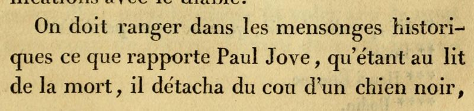
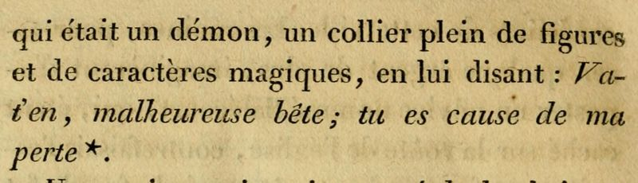
Among the lies of history must be put what Paolo Giovio reports: that on his deathbed he took off the neck of a black dog, which was a demon, a collar covered with magical figures and characters, saying to it: Be gone, wretched beast; you are the cause of my ruin.
Original French
On doit ranger dans les mensonges historiques ce que rapporte Paul Jove, qu’étant au lit de la mort, il détacha du cou d’un chien noir, [p. 122] qui était un démon, un collier plein de figures et de caractères magiques, en lui disant: Va-t’en, malheureuse bête; tu es cause de ma perte.
Lecky’s ch. I note 87, on Cornelius Agrippa: “it is related that, on his death-bed, he drew off from his neck a black dog, which was a demon, exclaiming that it was the cause of his perdition (Garinet, pp. 121, 122).” Two differences. Garinet introduces the story only to dismiss it as one of “the lies of history”, told by Paolo Giovio; Lecky’s “it is related” keeps the story and drops the verdict. And in Garinet’s sentence Agrippa takes a magic collar off the dog’s neck (“détacha du cou d’un chien noir … un collier”); Lecky has him draw the dog itself off his own neck, which looks like a misreading of the French construction. Lecky’s wording is confirmed on his own page (vol. I, p. 98).
Burnt alive at Bordeaux in 1718 for knotting the aiguillette (p. 256)
French: Paris 1818, p. 256, scan n313.
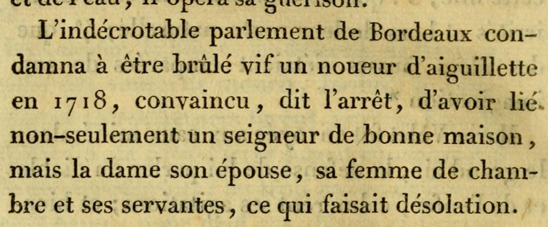
The incorrigible parlement of Bordeaux condemned a knotter of the aiguillette to be burnt alive in 1718, convicted, says the sentence, of having bound not only a lord of good family but the lady his wife, her chambermaid and her servants, which caused desolation.
Original French
L’indécrottable parlement de Bordeaux condamna à être brûlé vif un noueur d’aiguillette en 1718, convaincu, dit l’arrêt, d’avoir lié, non-seulement un seigneur de bonne maison, mais la dame son épouse, sa femme de chambre et ses servantes, ce qui faisait désolation.
“Knotting the aiguillette” was the spell supposed to make a married couple impotent. Lecky’s ch. I note 80, after quoting a writer on that belief, adds: “The last sorcerer who was burnt in France perished on this charge (Garinet, p. 256).” The case is on the page; Garinet does not say here that it was the last such burning (Michelet, too, has “En 1718, on brûle un sorcier à Bordeaux”: see the Michelet page).
Ventriloquists and the Devil (p. 280)
French: Paris 1818, p. 280, scan n337.
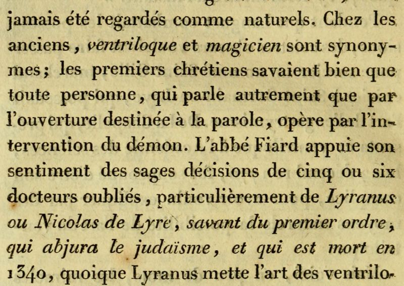
… Among the ancients, ventriloquist and magician are synonyms; the first Christians knew very well that anyone who speaks otherwise than through the opening meant for speech is working by the intervention of the demon. The abbé Fiard supports his opinion with the wise decisions of five or six forgotten doctors, particularly Lyranus, or Nicholas of Lyra, a scholar of the first rank, who abjured Judaism and died in 1340 …
Original French
… Chez les anciens, ventriloque et magicien sont synonymes; les premiers chrétiens savaient bien que toute personne, qui parle autrement que par l’ouverture destinée à la parole, opère par l’intervention du démon. L’abbé Fiard appuie son sentiment des sages décisions de cinq ou six docteurs oubliés, particulièrement de Lyranus, ou Nicolas de Lyre, savant du premier ordre, qui abjura le judaïsme, et qui est mort en 1340 …
Lecky’s ch. I note 100 (“some learned divines of the fourteenth century had solemnly determined that man was designed to speak by his mouth; and that, whenever he spoke in any other way, he did so by the assistance of the Devil (Garinet, p. 280)”) turns Garinet’s sarcasm into a report. Garinet is mocking the abbé Fiard, who cited “five or six forgotten doctors”, chiefly Nicholas of Lyra (d. 1340); Garinet goes on to note (OCR only) that Lyra put ventriloquism down to the Devil “without ever having seen or heard” a ventriloquist. Lecky’s “fourteenth century” fits Lyra.
Boguet’s code: strangle the witches, burn the werewolves alive (p. 302)
French: Paris 1818, Pièces justificatives, Boguet’s articles for the trial of sorcerers, p. 302, scan n359 (the articles run from p. 298).
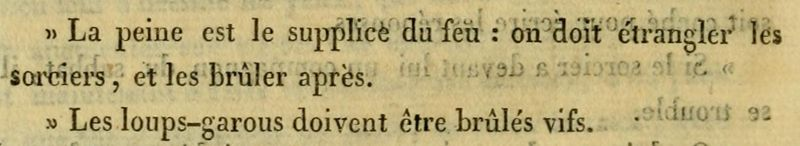
“The penalty is death by fire: sorcerers should be strangled, and burnt afterwards.
“Werewolves must be burnt alive.”
Original French
» La peine est le supplice du feu: on doit étrangler les sorciers, et les brûler après.
» Les loups-garous doivent être brûlés vifs.
Lecky’s ch. I note 80 says that the judge Henri Boguet “drew up a code in which he permitted ordinary witches to be strangled before they were burnt, but excepted lycanthropes, who were to be burnt alive (Garinet, pp. 298–302)”. Exact. The articles are printed in Garinet’s appendix of documents.
Mazarin congratulates the Bishop of Évreux: 1643, not 1642 (p. 328)
French: Paris 1818, Pièces justificatives no. XX, p. 328, scan n385.
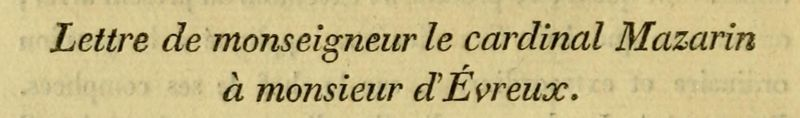
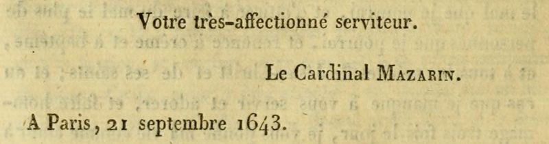
Letter from my lord Cardinal Mazarin to the Bishop of Évreux. Sir, the Archbishop of Toulouse has given us so favourable an account of your conduct in the affair of the nuns of Louviers that it has much raised our opinion of the care and zeal you bring to the duties of your office. … Your most affectionate servant, Cardinal Mazarin. Paris, 21 September 1643.
Original French
Lettre de monseigneur le cardinal Mazarin à monsieur d’Evreux. Monsieur, Monsieur l’archevêque de Toulouse nous a fait une si avantageuse relation de votre conduite en l’affaire des religieuses de Louviers, qu’elle a beaucoup augmenté l’opinion que nous avions du soin et du zèle que vous apportez à faire les fonctions de votre charge. … Votre très-affectionné serviteur, Le Cardinal Mazarin. A Paris, 21 septembre 1643.
Lecky’s ch. I note 98 gives this page for his statement that “in 1642, Cardinal Mazarin wrote a letter to the Bishop of Evreux, congratulating him warmly on the successful zeal he had manifested on the subject” (the possessed nuns of Louviers). The letter is there, but Garinet prints its date as 21 September 1643. Lecky’s “1642” is confirmed on his own page (vol. I, p. 107).
Editor’s notes on this page
A popular history of sorcery in France, published in 1818, which Lecky cites four times in the first twenty pages of Chapter I. Before the history proper, Garinet runs through the laws against sorcerers from Moses to the Roman emperors. Lecky’s sentences on ancient Greece and Rome (Augustine and the Epicureans, the Decemvirs, the Greek law, and the Athenian sorceress “Lemia”) follow this passage point by point.
Three things do not survive the trip. Lecky’s “pp. 13, 14” are really pp. xiii–xiv of the preface. Garinet says the philosophers condemned sorcerers; Lecky has them believing in sorcery. And “Lemia” is not a name the ancient sources give: the speech Garinet means names the sorceress as Theoris of Lemnos. See the comparison below.
Further down the rabbit hole
Sources that Lecky cites in the notes next to the ones that cite this page.
- Madden, PhantasmataAn Irish doctor’s history of delusions, and the witch-burnings in an Alpine valley
- Thiers, Traité des SuperstitionsThree papal bulls but no rebellion
- Buckle, History of Civilization in EnglandWeather and credulity, and the Scottish clergy’s Devil who had been studying for five thousand years
- Naudé, Apologie pour tous les grands personnages qui ont esté faussement soupçonnez de magieA librarian clears the great men of magic: Pope Sylvester, Pietro d’Abano, Agrippa
- Michelet, La SorcièreHow many witches were burnt, and when the last: Michelet gives two answers, and Lecky takes one from each
- Bodin, Démonomanie des SorciersThe great lawyer who wrote the witch-hunters’ handbook


Backlinks
Every place in Rationalism in Europe that links to this page (generated automatically when the site is built).